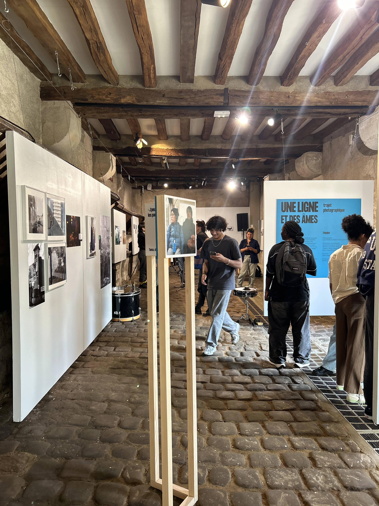
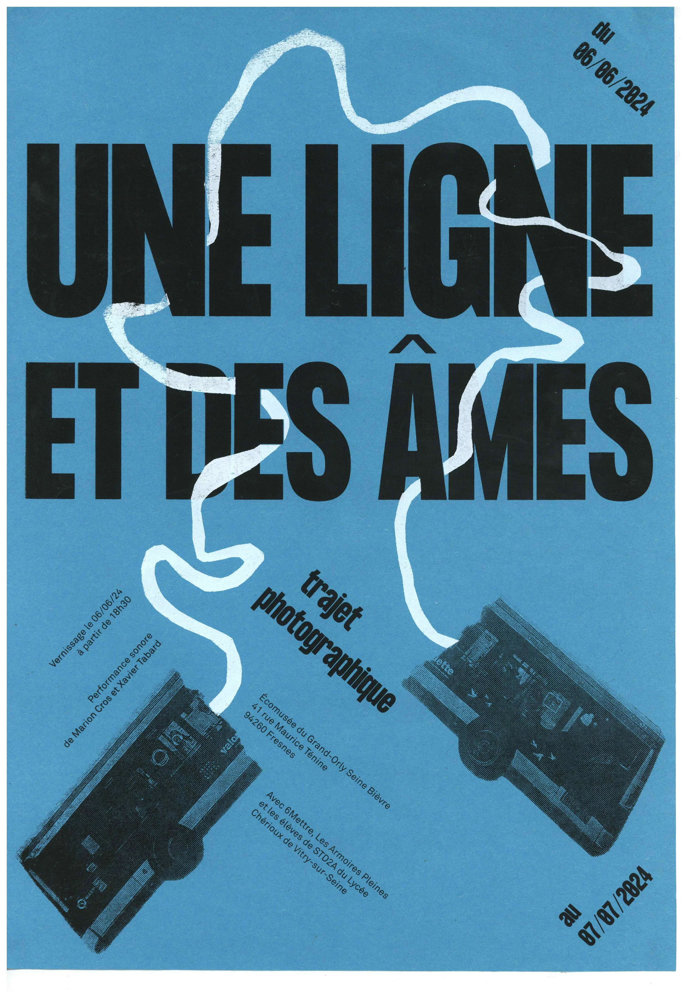
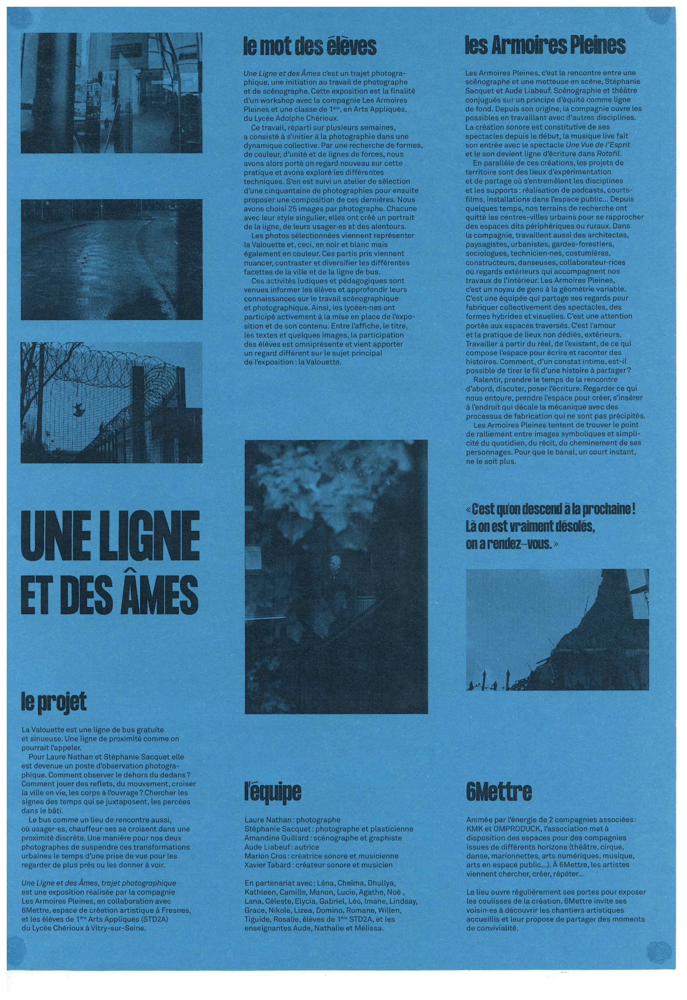

Graphisme · Sérigraphie · Exposition
Conception de l'identité graphique et impression sérigraphique de l'exposition Une Ligne et des Âmes affiche, feuillet et supports réalisés avec la compagnie Les Armoires Pleines à partir d'un trajet photographique sur la Valouette.
2024
Écomusée Grand-OrlyFresnes (94)
06 juin → 07 juillet 2024
Les Armoires Pleines6Mettre · Lycée Chérioux
L'affiche

